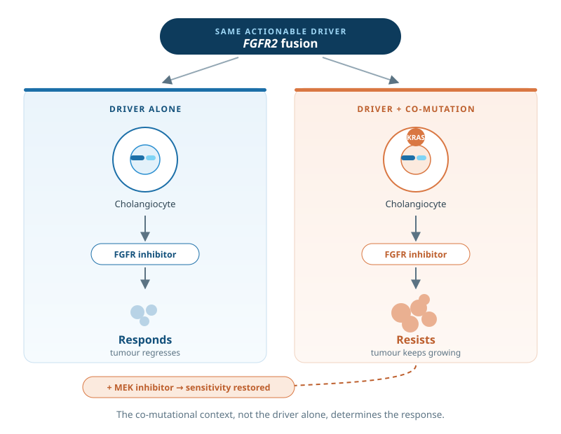

Co-mutations, Heterogeneity and Drug Resistance
Why tumours sharing the same actionable driver respond so differently to the same drug.
FGFR2 fusions occur in 10–20% of intrahepatic cholangiocarcinoma, yet only 20–35% of patients respond to approved FGFR inhibitors. In a murine model, we showed that co-occurring KRAS mutations drive primary resistance, while MEK co-targeting restores sensitivity (Kendre et al., Hepatology, 2021). This established that treatment response depends not only on the driver, but also on its genetic context.
We then mapped co-mutation patterns across actionable drivers in human intrahepatic cholangiocarcinoma, revealing how genetic context shapes therapeutic vulnerabilities (Kendre et al., Journal of Hepatology, 2023). We are now investigating candidate co-mutations that may drive resistance and identify opportunities for combination therapy.
The same principle extends beyond cholangiocarcinoma: in colorectal cancer, RNF43 alterations associate with BRAF V600E and MSI-high status (Vogel et al., JCO Precision Oncology, 2024). A driver does not act in isolation — the mutations that accompany it can change what it means for treatment.